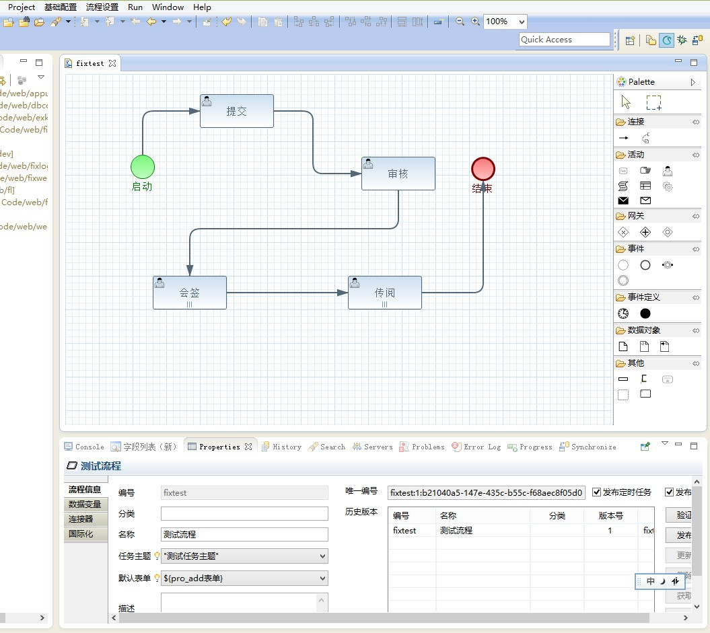
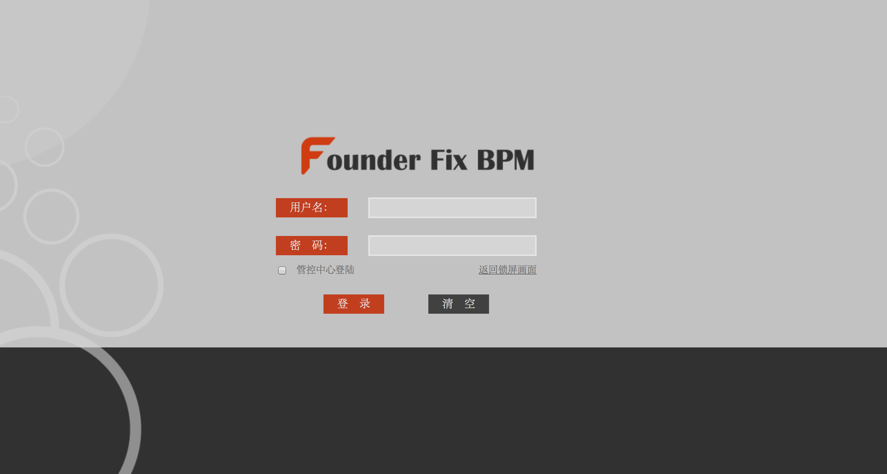

示例

我们的愿景
- 我们致力于将BPMN 2.0标准通过软件进行完美诠释！
- 在国内对于BPMN 2.0标准仍然是个新鲜事物的今天，我们团队希望可以借助GitHub这个开源社区，将先进的产品献给国内苦苦奋斗的从事BPM、流程引擎相关的广大资深架构师们，希望你们可以善用这把利剑帮助客户更好的解决BPM问题。
- 我们也希望通过开源社区，得到你们的贡献、支持与信任，帮助我们成为全国最受欢迎的开源BPM流程引擎！
Fixflow 是什么？
- 它是一款自主研发的开源BPM流程引擎。它本是来自2000年研发的 ES开发平台的工作流内核。
- 4.0版本设计之初就参考了最为新颖的BPMN2.0标准草案，在新标准正式发布后，我们就积极参与到标准实现的工作中去。
- 我们吸纳了 jBPM3 和 Activiti5 等国际开源流程引擎的精髓，参考了SAP Netwaver、IBM BPM 等重量级BPM产品功能。
- Founder Fix BPMCS开发平台发布后，经历了数个大型企业项目的历练，流程引擎的扩展体系逐渐完善。
- 到今天，我们认为是时候了，它已经可以做为独立的产品，它要从幕后走到台前了！
为什么选择FixFlow？
- 数十年积淀，运行稳定
- 基于国际标准 BPMN 2.0
- 开源以及强大的社区支持
- BPMS支持、嵌入式工作流
- 插件式图形设计器
- 符合中国式的流程功能
- 强大灵活的扩展模式
视频示例

Changelog
- 5.0.0（2013-07-?）FixFlow引擎成为独立项目,从CS SOA中间件中剥离,贡献给开源社区。
- 4.7.0（2013-1-02）CS SOA中间件 4.7版本发布.内置fixflow4.7版本流程引擎。
- 4.0.0（2011-6-02）CS SOA中间件 4.0版本发布.内置fixflow4.0版本流程引擎。开始支持BPMN标准,设计器改为基于Eclipse插件方式。
- 3.5.0（2010-5-15）CS SOA中间件 3.5版本发布.内置fixflow3.5版本流程引擎。
- 3.0.0（2009-11-03）CS SOA中间件 3.0版本发布.内置fixflow3.0版本流程引擎。
- 2.5.0（2007-06-01）ES平 2.5版本发布.内置fixflow2.5版本流程引擎,分.net、java两个版本。
- 1.0.0（2000-05-10）ES平台 1.0版本发布.内置fixflow1.0版本流程引擎